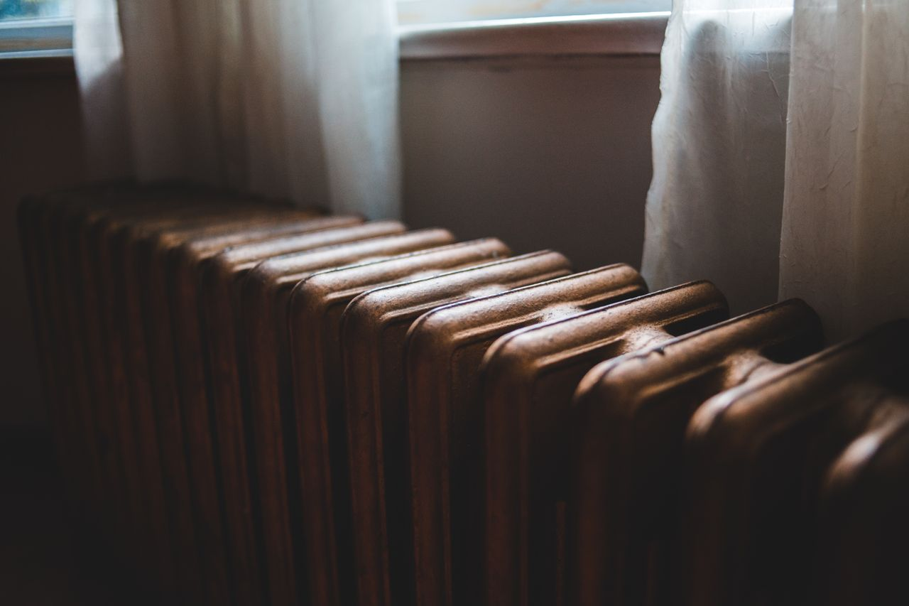

긴급복지지원 신청 2026 — 10월 1일부터 동절기 연료비 월 15만원, 실직·질병이면 생계비 78만 원부터
발행일 2026-10-02

30초 요약
| 항목 | 내용 |
|---|---|
| 대상 | 주소득자·부소득자의 실직·휴폐업, 중한 질병·부상, 이혼, 가정폭력, 화재 등으로 소득이 끊기거나 크게 줄어든 가구. 2026년 소득 문은 기준 중위소득 75% 이하 — 1인 월 192만 3,179원, 2인 314만 9,469원, 3인 401만 9,277원, 4인 487만 1,054원, 5인 566만 7,539원, 6인 641만 6,964원 이하 |
| 지금 겹치는 것 | 동절기 연료비 10월 1일~3월 31일, 월 150,000원(가구당, 최대 6개월). 오늘부터 신청 창이 열리는 달입니다 |
| 얼마나 | 생계비 1인 783,000원·4인 1,994,600원(3개월, 심의 거치면 총 6개월) · 의료비 300만 원 이내 · 그 밖의 항목은 아래 표 |
| 신청 | 주소지 시·군·구청 방문 또는 전화, 보건복지상담센터 129, 복지로·복지위기알림 앱(이웃 신고는 익명 가능) |
| 순서 | 먼저 지원, 나중에 조사. 서류가 다 갖춰질 때까지 통장을 멈춘 채 기다리지 않아도 됩니다 |
1. 누가 대상이냐 — '일'이 생기면 봅니다
재산이 몇 원 이하인 사람만 쓰는 제도가 아닙니다. 먼저 보는 건 위기사유입니다. 가장이 일자리를 잃었거나, 병치레나 부상으로 일을 놓게 되거나, 가게에 불이 나거나, 이혼으로 수입이 반 토막 나는 일 — 이런 일이 본인이나 생계·주거를 같이하는 가족에게 닥쳤을 때가 창입니다. 사업하던 주소득자·부소득자가 휴업·폐업하거나 사업장 화재로 실질적 영업이 어려워진 경우도 포함됩니다.
그다음에 소득·재산을 봅니다. 다만 순서가 남달라요. 위기상황이 확인되기만 하면 지원이 먼저 나가고, 소득·재산 기준을 넘었는지는 그 뒤 조사와 심사에서 가립니다. "나는 재산이 애매하니 신청해봐야 소용없다"는 계산은 여기서 성립하지 않아요. 기준을 넘었다면 그 다음에 환수 절차가 진행될 뿐이라, 환수가 겁나서 신청을 미룰 이유는 없습니다.
2. 얼마나 — 10월은 두 개가 겹칩니다
생계지원은 3개월간 계좌로 입금됩니다. 2026년 기준 1인 783,000원, 2인 1,286,600원, 3인 1,644,000원, 4인 1,994,600원, 5인 2,324,400원, 6인 2,636,700원. 7명 이상은 1명이 늘 때마다 301,000원이 얹힙니다. 위기가 계속되면 긴급지원심의위원회 심의를 거쳐 연장할 수 있는데, 이 경우에도 생계지원은 총 6개월까지예요.
여기에 10월 1일부터 동절기 연료비가 붙습니다. 기름·가스·전기·연탄·땔감 등 난방에 쓰는 비용을 가구당 월 150,000원, 10월부터 이듬해 3월까지 지원해요. 생계지원 기간과 달이 겹치면 둘 다 받을 수 있고, 주지원이 끝나면 연료비도 같이 끝납니다. 10월에 신청하는 가구가 유리한 이유가 이것입니다 — 봄에 다시 신청할 형편이 안 되면 이 6개월 창은 그대로 지나가 버려요.
| 항목 | 2026년 기준 | 기간·횟수 |
|---|---|---|
| 생계 | 1인 783,000원 ~ 4인 1,994,600원 / 월 | 3개월 (심의 시 총 6개월) |
| 의료 | 300만 원 이내 (본인부담금·일부 비급여) | 1회 (심의 시 총 2회) |
| 주거 | 임시거소 제공 또는 주거비 지원 — 지역·가구원수별 월 18만 원대부터 5~6인 대도시 874,100원까지 | 1개월 (심의 시 총 12개월) |
| 동절기 연료비 | 150,000원 / 월 | 10월~3월, 최대 6개월 |
| 전기요금 | 밀린 요금 50만 원 이내 | 1회 |
| 해산비·장제비 | 각 700,000원 / 800,000원 | 각 1회 |
| 교육지원 | 초등 127,900원·중학 180,000원·고등 214,000원 + 학교장이 고지한 수업료·입학금 | 분기별 (최대 2회) |
참고로 긴급지원금과 그 입금 계좌의 채권은 압류 대상이 아닙니다. 채권자가 통장을 잡아도 이 돈은 건드릴 수 없고, 지원금을 생계 유지가 아닌 목적에 쓰려고 양도하거나 담보로 잡히는 것도 금지되어 있습니다.
3. 제외·주의
- 같은 내용의 지원을 이미 받고 있으면 빠집니다. 재해구호, 기초생활보장, 의료급여, 가정폭력·성폭력 피해자 보호 등 다른 법령에 따라 같은 내용을 이미 구호·보호·지원받고 있는 가구는 제외돼요.
- 같은 위기사유로 다시 받으려면 시간이 필요합니다. 지원이 끝나면 같은 사유로는 다시 지원받지 못하고, 2년이 지나야 재지원이 가능합니다. 다른 위기사유라도 생계지원은 1년, 주거·시설지원은 3개월이 지나야 다시 신청할 수 있어요.
- 금융재산 기준이 따로 있습니다. 가구원 수별로 1인 8,564,000원부터 4인 12,494,000원, 5인 13,556,000원, 6인 14,555,000원 이하(7인 이상은 1명당 960,000원씩 증가). 주거지원을 받으면 이 금액에 200만 원을 더한 기준을 적용합니다.
- 연료비는 3월이면 자동 종료됩니다. 주지원이 계속되어도 동절기가 끝나면 연료비 지원은 끝나므로, 4월에 "왜 안 들어와"로 문의할 항목이 아니에요.
4. 서류
신청 단계에서 서류 완비를 요구하지는 않습니다. 원칙은 위기사유 확인이에요. 다만 담당 공무원이 거주지로 나와 확인할 때 아래가 있으면 한 번에 끝납니다. 신분증, 통장 사본(지원금 입금용), 실직이면 퇴직 증빙(퇴직일자가 적힌 것), 아프면 진단서나 입퇴원 확인서, 월세·전기료 체납이면 고지서. 통장을 통째로 내지 말고, 요청받은 기간만 뽑아 가는 편이 깔끔합니다.
5. 순서
- 연락 — 주소지 시·군·구청 또는 읍면동 주민센터에 전화·방문. 본인이 직접 가기 어려우면 전화 한 통으로 현장 확인 요청까지 가능합니다.
- 현장 확인 — 담당 공무원이 거주지를 방문해 위기상황을 확인합니다.
- 지원 결정·지급 — 확인되면 지원 종류와 금액을 정해 즉시 지원합니다. 계좌 입금이 원칙이고, 금융기관이 멀거나 전산 장애일 때는 현금 지급도 가능합니다.
- 사후조사 — 지원 결정일부터 1개월 이내(금융 조사는 예외)에 소득·재산을 전산 대조합니다. 여기서 기준 초과가 확인되면 환수 논의가 시작됩니다 — 그 기준과 금액 계산은 별글로 정리해 뒀습니다.
- 연장이 필요하면 — 위기가 계속될 때만 긴급지원심의위원회 심의를 거쳐 연장됩니다. 자동 갱신이 아니니 담당 부서에 의사를 밝혀 두세요.
6. 안 될 때 — 본인이 아니어도 신고는 됩니다
가장 막히는 경우는 "우리 사정을 누가 아나"입니다. 이 제도는 본인뿐 아니라 친족·그 밖의 관계인, 위기가구를 발견한 누구든 신고할 수 있게 되어 있어요. 혼자 지내는 윗집 아저씨가 몇 달째 밖으로 나오질 않는다 싶으면, 그건 사생활 시비가 아니라 신고 사항입니다.
신고 길은 세 개입니다. 주소지 시·군·구청 전화 또는 방문, 보건복지상담센터 129(국번 없이), 그리고 복지위기알림 앱이에요. 앱은 플레이스토어·앱스토어에서 무료 설치하고, 회원가입 없이 비회원으로 쓸 수 있습니다. 위치 기반으로 관할 주민센터를 찾아 담당자가 연락해 오고, 사진 첨부도 됩니다. 남의 집을 신고하는 게 꺼려지면 익명 신청을 고르면 됩니다. 같은 제도는 복지로 누리집의 '복지위기알림' 메뉴에서도 같습니다.
거절 통지를 받았다면 30일 이내 이의신청입니다. 시·군·구는 10일 내 시·도로 서류를 보내고, 시·도는 15일 내 이의신청인과 시·군·구에 서면으로 통보해요. 그리고 담당 공무원이 조사로 얻은 내 정보를 목적 외로 쓰거나 남에게 주면 3년 이하 징역 또는 3천만 원 이하 벌금입니다 — 조사받으면서 내 정보가 어디로 가는지 물을 권리가 있습니다.
바로 가기
- 복지로 — 복지위기알림·자격 모의계산
- 보건복지부 — 긴급복지지원제도 안내
- 보건복지상담센터 129 (국번 없이)
소득·재산 기준과 지원금액은 매년 바뀌고, 지자체에 자체 기준(지방 긴급지원)을 더 둔 곳도 있습니다. 실제 적용 여부는 관할 시·군·구청 판단에 따릅니다.
같이 읽기
- 긴급복지지원 신청 기준과 항목별 금액 — 1인 783,000원이 나온 계산식과 항목별 한도 전체
- 긴급복지지원 환수 기준 2026 — 먼저 받고 나서 조사받을 때 돌려막는 금액과 30일 이의신청
- 청년월세 지원 — 위기가 아니어도 19~34세면 월 최대 20만 원을 받는 별도 창
- 행복주택 입주자격·임대료 2026 — 당장 나갈 집이 필요하다면 시세 60~80% 공공임대 기준